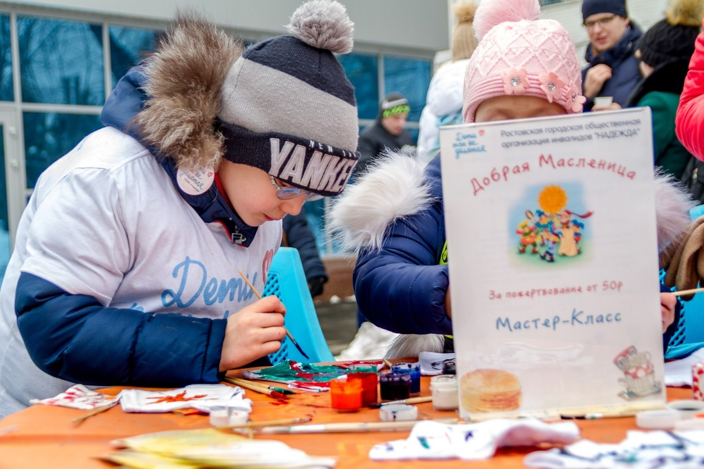
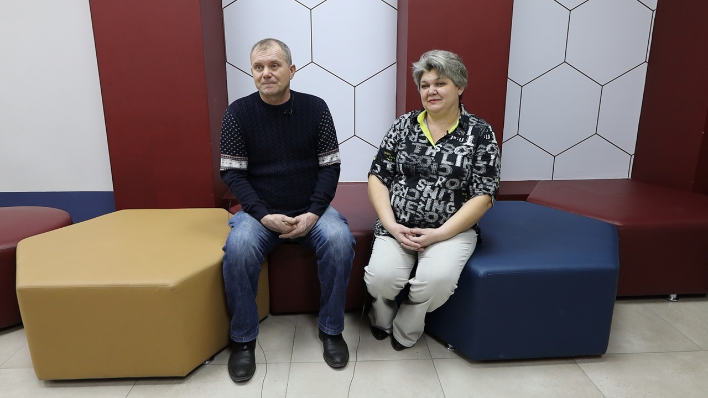
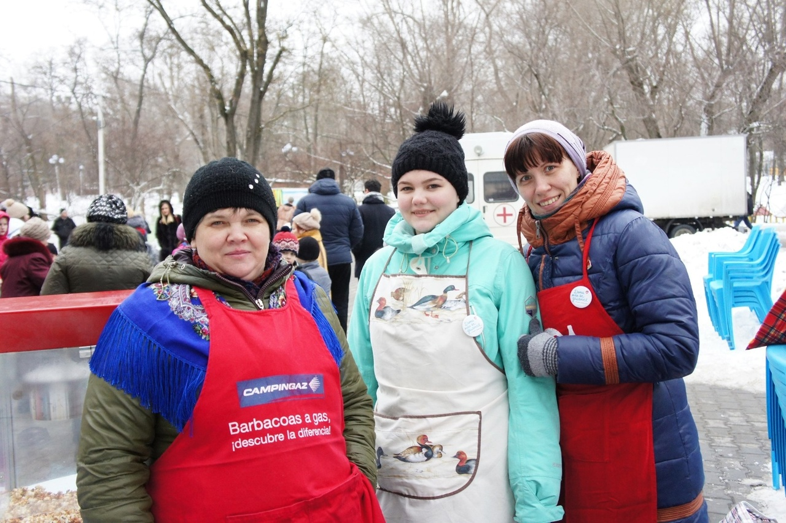
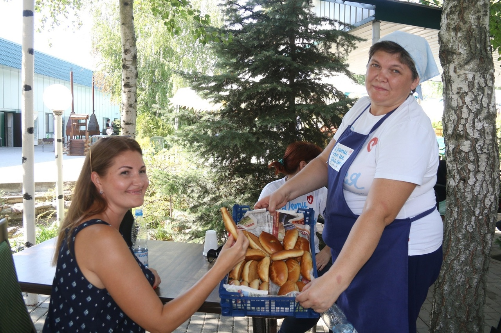
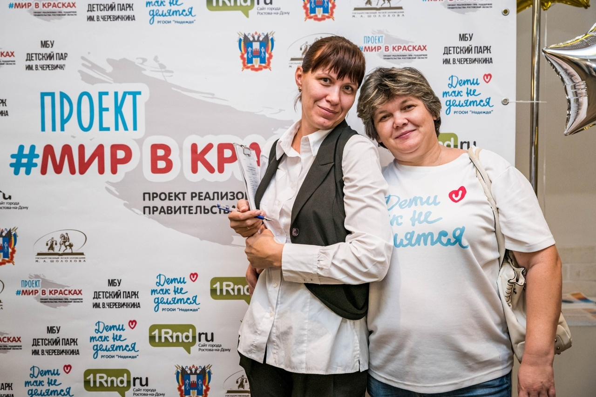
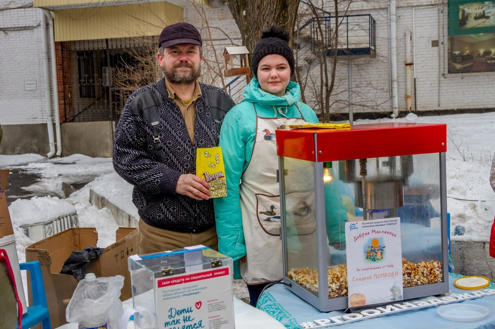
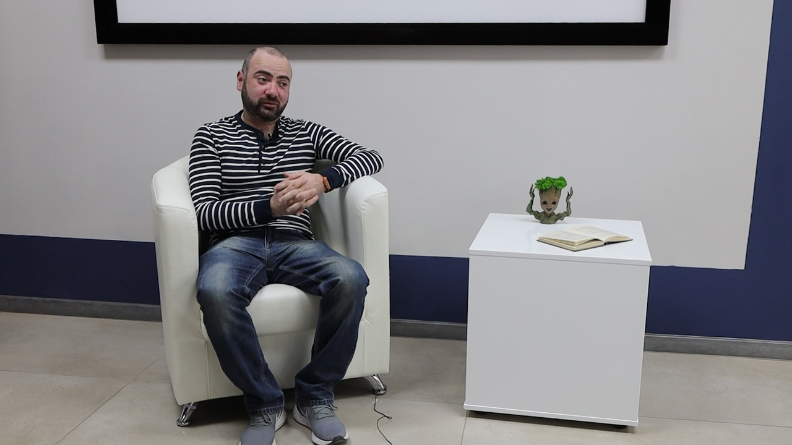
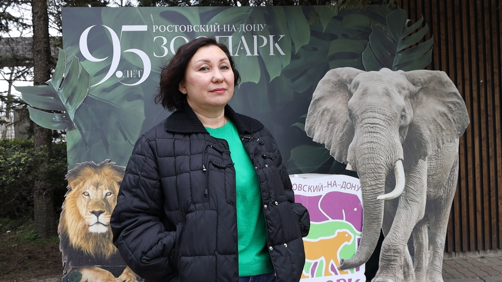

Почему помогать другим так же важно, как радовать себя? Когда сочувствие перерастает в реальную помощь? Сейчас вы познакомитесь с деятельностью нескольких волонтёров благотворительных фондов.

Интервью №1
Супруги Буцан — «Надежда»
Буцан Оксана Владимировна и Буцан Александр Анатольевич
Волонтёры РГООИ «Надежда»
Первый разговор состоялся с супружеской парой, которая оказывает благотворительную помощь детям-инвалидам в РГООИ «Надежда».
Справка
РГООИ (Ростовская городская общественная организация инвалидов) «Надежда» основана в 1997 году для помощи семьям с детьми-инвалидами. Сайт: rgooi-nadezhda.ru
— В чём заключается ваша деятельность как волонтёров?
Оксана.
Мы родители ребёнка-инвалида. Муж работает, а я с ребёнком дома. Младший занимается в центре «Надежда», мы помогаем центру в организации мероприятий, поездок.

Оксана и Александр Буцан
— Что сподвигло вас заниматься волонтёрством?
Александр.
У нас была потребность в этом! У нас самих есть такой ребёнок. Получив помощь, мы так же захотели помогать другим.
Оксана.
Когда мы начали вливаться в эту организацию, сначала было тяжело. Самое главное – принять, что так всё получилось, надо жить дальше. Мы живём.
Самое главное – принять, что так всё получилось, надо жить дальше. Мы живём.— Оксана Буцан
— Какими качествами должен обладать волонтёр?
Оксана.
Должно быть терпение и понимание. Дети делают многое не для того, чтобы насолить, просто они по-другому не умеют. Когда дети понимают, что ты на них не злишься, они делятся сокровенным.
Мы в детский лагерь часто ездим. Муж занимается с детками выжиганием. Группа занимается вместе, каждый делится достижениями.

Дружная команда центра «Надежда»
В нашем центре трудится девочка, которая рисует на ткани с детьми – они в полном восторге! Футболки разрисовывают, целый год ходят. А самое классное, что своими руками!

Дружная команда центра «Надежда»
Детям нужно социализироваться. При социализации они быстрее развиваются.
— Что может препятствовать волонтёрской деятельности?
Оксана.
Настрой человека. Самый важный ресурс для волонтёра – время. Если дети чувствуют внимание, они откликаются на заботу.
Александр.
Волонтёрство – это, скорее, время, чем деньги. Государство помогает материально, а время не у всех есть.
Волонтёрство – это, скорее, время, чем деньги.— Александр Буцан
Видео-момент от волонтёров
— Добры ли люди в обществе?
Александр.
Чем крупнее общество, тем больше разобщённости. В маленьком коллективе легче обеспечить тёплые взаимоотношения.
Оксана.
Нас больше 200 человек! Чтобы все друг дружку поддерживали – нет, так не будет. Но главное, чтобы не обижали. Наши детки-инвалиды справляются с трудностями, но им очень больно, когда их обижают.
— Самое запоминающееся мероприятие?
Оксана.
На Яблочный Спас мы сами пекли шарлотки и продавали их прохожим, а потом раздавали деткам. Праздничная атмосфера, детки бегают, резвятся…

Дружная команда центра «Надежда»
— Добрая история?
Оксана.
В одном кафе висела табличка: можно заплатить за кружку кофе другому человеку. Если у кого-то не будет денег, он придёт, возьмёт эту кружку и скажет спасибо. Вот у нас пока есть возможность помогать – мы помогаем. Надеюсь, те, кто примут помощь, присоединятся к добрым делам!

Дружная команда центра «Надежда»
Интерактив
Какой ты волонтёр?
Ответь на три вопроса и узнай, чей путь тебе ближе.
Интервью №2
Михаил Согомонян — «Дарина»
Согомонян Михаил Тарасович
Волонтёр фонда «Дарина»
Вторая встреча состоялась с волонтёром благотворительного фонда помощи детям с онкогематологическими заболеваниями «Дарина».
Справка
Фонд «Дарина» основан в 2012 году, помог более чем 400 детям. Сайт: darina-rostov.ru
— В чём заключается Ваша деятельность?
Фотографирую детей в больницах и на соревнованиях. Фотография для меня — это эмоция в моменте.

Согомонян Михаил Тарасович
— Вы начали заниматься волонтёрством в переломный момент?
Да, я сам раньше болел онкологическим заболеванием. Видя тёплое отношение чужих людей, я тоже решил помогать. С 2014 года активно фотографирую.
Справка
Фонд «Подари жизнь» помогает детям с онкозаболеваниями. Сайт: podari-zhizn.ru
— Какими качествами должен обладать волонтёр?
Желание помогать бескорыстно, по зову сердца.
— Почему люди становятся волонтёрами?
Кто-то сталкивается с трудностями, как я. У кого-то появляется желание изменить мир к лучшему.
— Что даёт волонтёрская деятельность?
Душевное спокойствие, равновесие. Если я могу помочь, то почему бы не сделать? Жизнь наполняется красками.
Если я могу помочь кому-то, то почему бы это не сделать?— Михаил Согомонян
— Самое запоминающееся мероприятие?
«Игры победителей», которые ежегодно проводит фонд «Дарина». Там царит семейная атмосфера.
— История, которой хочется поделиться?
В Москве на международных играх мальчик-индус подарил мне две монетки своей валюты, а я ему – наши. Искреннее общение без слов!
— Совет начинающим волонтёрам?
Не бояться, что что-то не получится. Всё возможно, надо всегда к чему-то стремиться.
Интервью №3
Елена Пятина — координатор «Дарина»
Пятина Елена Анатольевна
Координатор программы «Реабилитация», фонд «Дарина»
Третий разговор состоялся с координатором программы «Реабилитация» в фонде «Дарина». Интервью брали прямо во время благотворительного мероприятия в ростовском зоопарке.
— В чём заключается Ваша волонтёрская деятельность?
Я стала больничным волонтёром 16 лет назад. Сейчас команда проводит занятия с детьми в онкологических отделениях Ростова.
— Что даёт Вам волонтёрство?
Радость оттого, что можешь помочь и быть наставником. Мой путь воспитал меня как личность, и теперь я передаю опыт молодёжи.
— С чем ассоциируется волонтёрство?
Взаимопомощь, доброе сердце и неравнодушие.
— Был ли переломный момент?
16 лет назад появился сайт фонда «Подари жизнь». Я начала консультироваться, как развить подобную деятельность в Ростове.
— Какая история запомнилась больше всего?
Одна девочка занималась у нас три года, потом уехала. Через пару лет я встретила её с длинными волосами. Мама рассказала, что дочка хранит все творческие работы на стене и не вспоминает о 17 курсах химиотерапии и четырёх операциях.

Елена Пятина
Девочка не вспомнила о четырёх операциях и 17 курсах химиотерапии.— Елена Пятина
Волонтёры играют огромную роль в обществе
Благодаря их бескорыстной помощи эффективнее реализуются многие социальные программы и проекты. Волонтёры помогают нуждающимся и способствуют развитию общества.
Герои интервью рассказали, как они пришли к волонтёрской деятельности, поделились запоминающимися историями — например, судьбами людей, которые смогли побороть болезнь.
Благотворительная деятельность кардинально меняет жизнь людей. Она зажигает сердца, развивает чувство сопереживания. Благодаря волонтёрству у людей появляется возможность путешествовать, обретать друзей в разных городах и странах.
Помогая другим, мы делаем этот мир лучше.
Интерактив
Собери волонтёрский пазл
Ответьте на вопросы о героях интервью и откройте главную цитату.